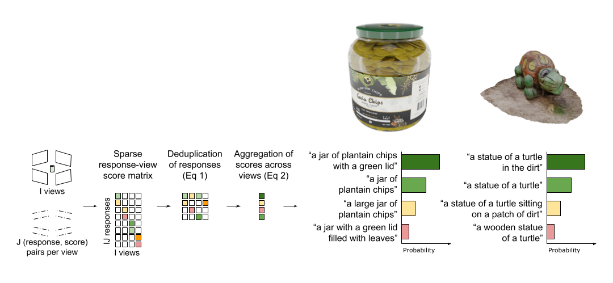

Pretrained vision language models (VLMs) present an opportunity to caption unlabeled 3D objects at scale. The leading approach to summarize VLM descriptions from different views of an object (Luo et al., 2023) relies on a language model (GPT4) to produce the final output.
This text-based aggregation is susceptible to hallucinations as it merges potentially contradictory descriptions.
We propose an alternative algorithm to marginalize over factors such as the viewpoint which affect the VLM's response. Instead of merging text responses, we utilize the VLM's joint image-text likelihoods.
We show our probabilistic aggregation is not only more reliable and efficient, but sets the SoTA on inferring object types with respect to human-verified labels.
The aggregated annotations are also useful for conditional inference; they improve downstream predictions (e.g., of object material) when the object’s type is specified as an auxiliary text-based input.
Such auxiliary inputs allow ablating the contribution of visual reasoning over visionless reasoning in an unsupervised setting.
With these supervised and unsupervised evaluations, we show how a VLM-based pipeline can be leveraged to produce reliable annotations for 764K objects from the Objaverse dataset.
1. Language models hallucinate
Prior work that relies on GPT-4 to aggregate multi-view object descriptions is prone to contain specious or hallucinated details:
2. A simple way to mitigate hallucinations
We propose an algorithm, ScoreAgg, which relies on visually grounded VLM scores to produce reliable summaries. These scores can be derived for free while sampling from the VLM. ScoreAgg requires no additional modules, nor any model retraining. It is a simple way to boost the accuracy of zero-shot VLM inference.

Quantitative Comparison
See Figure 3 in the paper for a quantitative comparison.
More Qualitative Results
CAP3D: an eggplant king with a black cloak, gold crown, and black dress. Ours: an eggplant wearing a black cape and a crown
CAP3D: a covered wagon with a wooden roof, a horse, and a bottle on it. Ours: a wagon with a large bottle on the back of it
CAP3D: a stack of cards and an accordion. Ours: a deck of cards being shuffled
CAP3D: A yellow toy jeep with an orange on top. Ours: a peeled orange on top of a toy jeep
CAP3D: a soccer ball, volleyball, and basketball. Ours: four different sports balls
CAP3D: an empty classroom featuring a green board, wooden floor, counter, shelf, and ceiling light with a wooden panel. Ours: an empty classroom with a wooden floor
CAP3D: an old-fashioned cash register, a heart-shaped box on a wooden base, a coffee machine, a coin machine, and a shelf with an electrical outlet. Ours: an old fashioned cash register with coins in the drawers
CAP3D: a plate with flatbread (chapati/roti), a cup of water, a bowl of soup/chutney, and dipping sauces. Ours: a tortilla on a plate with two cups of sauce
CAP3D: white set featuring a tyrannosaurus rex, horse, dog, baby, small animal, wolf, and polar bear. Ours: two gray animals standing next to each other
CAP3D: a fish, a can of soup, a bowl, a spoon, and various food items. Ours: a fish and some containers of food
CAP3D: an old typewriter, a rusted and torn-up chair, and a destroyed car. Ours: a typewriter sitting on top of a chair
CAP3D: a hot air balloon with a globe inside and a box attached. Ours: a hot air balloon shaped like the earth
CAP3D: red cake with candy canes and a bow. Ours: a piece of cake with two candy canes sticking out of it
CAP3D: lamp model with a purple and pink shade and a purple handle. Ours: a lamp with a wooden shade and purple trim
CAP3D: a monument resembling a concrete block or gravestone in a grassy field. Ours: a gravestone with a plant next to it
CAP3D: a tooth, ring with white balls, bunch of bones, and cloud. Ours: a bunch of gray objects
CAP3D: a woman in a bikini with a fish on her back, also featuring a fish in a bikini and a person in a fish costume. Ours: a woman in a bikini with a fish head
CAP3D: a ghost holding a bag, featuring a white robe with a yellow ball, and a lamp with a black base. Ours: a ghost holding a trick or treat bag
CAP3D: A plate of sliced mangoes and oranges brown bowl. Ours: a blue and white plate with slices of cantaloupe on it
CAP3D: pixelated owl with yellow eyes. Ours: an owl made out of blocks
CAP3D: a bowl filled with various items such as peanuts, gold coins, bread, shells, and nuts, with a hat on top and additional elements like a wicker basket with gold eggs and an umbrella. Ours: a basket of bread with a hat on top of it
CAP3D: a wooden bed with pillows, blankets, and food on it. Ours: a bed with a patchwork quilt on it
CAP3D: a red first aid box with a cross and cookies on top. Ours: a first aid kit and three chocolate chip cookies
CAP3D: a drum set Ours: a set of drums
CAP3D: a wooden piano with stool and cabinet. Ours: a piano and a stool
CAP3D: a row of vending machines and various colored boxes. Ours: a bunch of vending machines in a row
CAP3D: a chessboard with pink, white, blue, and purple chess pieces. Ours: a blue and black chess board with purple and white pieces
CAP3D: a grey cylindrical trash can with a yellow lid, featuring a gold calculator, a piece of paper, and a pen on top. Ours: a calculator sitting on top of a black cylinder
CAP3D: sushi on a plate. Ours: a bunch of sushi
CAP3D: an electric guitar and amplifier on a red circular table with a hole in the middle. Ours: a guitar on a stand next to an amplifier
CAP3D: a statue featuring a man on a horse, a cow, and a group of people on a boat. Ours: a statue of people and a bull
CAP3D: two bears interacting on a rock. Ours: a statue of a bear attacking a sheep
CAP3D: an ornate white and silver wheelchair with a girl and various accessories, including a cup of tea and a clock. Ours: a statue of a woman in a wheelchair
CAP3D: Lemonade with a lemon wedge and a blue and white striped straw. Ours: a glass of lemonade with a straw and a slice of lemon
CAP3D: a glass jar filled with cookies. Ours: a jar of cookies with a wooden lid
CAP3D: a telescope on a tripod with a wooden handle. Ours: a telescope
CAP3D: a man holding a box, interacting with a red curtain and a red and blue door, and shaking hands with another person on top of a box. Ours: a man standing in front of a red curtain
CAP3D: a Solar Panel Array Ours: a row of solar panels on a green surface
CAP3D: pumpkin with various accessories, including an axe, umbrella, hat, and knife, accompanied by figures such as a man, scarecrow, and person holding different items. Ours: a scarecrow with a pumpkin head
CAP3D: two people sitting on a bench. Ours: a statue of two people sitting on steps
CAP3D: A bunch of yellow grapes and bananas with some balloons. Ours: a bunch of coconuts
CAP3D: a brick wall featuring a statue, door, and window, with a cat sitting on it. Ours: a brick wall
CAP3D: a teddy bear, a bag of trash, and a dirty plate with a red and black heart on it. Ours: a plate with a toy and a bag on it
CAP3D: a yellow wooden dresser with drawers, featuring a trash can, a cardboard box with an arrow, and a box with a piece of paper sticking out. Ours: a wooden dresser with drawers open
CAP3D: a bed with a white frame and headboard, featuring pillows, a lamp, and a small table with a chair. Ours: a bed and a table with a lamp on it
CAP3D: a framed painting with a piece of paper on top, featuring a broken frame and canvas. Ours: a canvas with a painting on it
CAP3D: watermelon slices with a bird. Ours: a watermelon being smashed into pieces
CAP3D: five baseball caps with various Pokémon designs and colors. Ours: a bunch of hats stacked on top of each other
CAP3D: a ham and cheese pizza with a yellow and white patterned plate. Ours: a pepperoni and mushroom pizza
CAP3D: Three orange and white traffic cones. Ours: three traffic cones
CAP3D: a modern wooden dining table with six chairs. Ours: a wooden table with gray chairs around it
CAP3D: A set of three pillows with unique designs on them. Ours: four pillows stacked on top of each other
CAP3D: brown leather book with a matching strap. Ours: two books stacked on top of each other
CAP3D: cartoon character with a hat in a boxing ring. Ours: a cartoon character in a boxing ring
CAP3D: a three-tier, multicolored cake adorned with pink, blue, green, and yellow roses. Ours: a three layer cake with flowers around it
CAP3D: a colorful flower with balloons in a grassy field. Ours: a bunch of rocks growing out of the ground
CAP3D: a colorful assortment of toys, shapes, and a cat on a green field. Ours: various geometric shapes on a green surface
CAP3D: a tray with a glass of milk, a box of cookies, and a milk carton. Ours: a carton of milk a glass of milk and a cookie
CAP3D: a royalty-free Chinese food cart. Ours: a wooden cart with a red lantern hanging from it 's side
CAP3D: a coffee machine with a silver metal box and red ball on top. Ours: a coffee maker
CAP3D: a crab holding a Rubik's Cube. Ours: a crab and a rubix cube
CAP3D: a rabbit wearing bunny ear headphones. Ours: a pair of headphones with bunny ears
CAP3D: Three cassette tapes stacked together. Ours: three cassette tapes
CAP3D: a rocket, white pipes, pens, pencils, and various other items. Ours: a pen that has been taken apart
CAP3D: white plane with a yellow stripe and a pair of scissors. Ours: a pair of scissors cutting a stick
CAP3D: a graffiti splatter, a black cat with a green hat, a multicolored object, a skateboarder, and a cartoon character with a red and black hat. Ours: a black silhouette
CAP3D: a pink crab holding a birthday cake with candles, surrounded by a giraffe, fish, squid, and cat interacting with the cake. Ours: a lobster eating a cake with candles on it
CAP3D: An open cardboard box with two pairs of shoes and two black cylinders inside, featuring the "Box in the Box" company logo. Ours: a cardboard box with a pair of boots in it
CAP3D: A pixelated image of two animals, resembling sheep and deer, with white and pink features. Ours: two pixelated animals standing next to each other
CAP3D: a coffee shop building with stairs, featuring a restaurant and cafe interior with tables, chairs, and hanging ceiling decorations. Ours: a restaurant
CAP3D: a basketball hoop and a white paper airplane. Ours: a basketball hoop and ball
CAP3D: a mushroom with a hat on a green base. Ours: a statue of a mushroom on a green base
CAP3D: cartoon hamster holding a barbell. Ours: a cartoon hamster lifting a barbell
CAP3D: purple and black cat with a yellow bubble in its mouth, playing with a ball and frisbee. Ours: a cat with a flashlight on its face
CAP3D: a small town featuring buildings, trees, parking lots, and landscaped areas with plants and grass. Ours: a building and trees
CAP3D: a microphone on a tripod with a cord attached, compatible with various modeling and animation software. Ours: a microphone on a tripod
CAP3D: A pink and blue donut shop with a cat on top and potted plants. Ours: a cartoon house with a cat on top
CAP3D: A pair of white and red earrings with a red stone, a white and red ball, and a white and red switch. Ours: two pieces of metal with holes in them
CAP3D: A Lego man with a bow and arrow, gun, knife, and tool in hand. Ours: a lego man holding a crossbow and a crowbar
CAP3D: 'Three penguin figurines with different hats and bow ties.' Ours: three dolls with different colored wigs
References
[1] Luo, Tiange, et al. "Scalable 3d captioning with pretrained models." Advances in Neural Information Processing Systems 36 (2023).
BibTeX
@inproceedings{ICML2024_LeveragingVLMs,
author = {Kabra, Rishabh and Matthey, Loic and Lerchner, Alexander and Mitra, Niloy J.},
title = {Leveraging VLM-Based Pipelines to Annotate 3D Objects},
booktitle = {Proceedings of the 41st International Conference on Machine Learning},
series = {Proceedings of Machine Learning Research},
publisher = {PMLR},
volume = {235},
year = {2024}
}